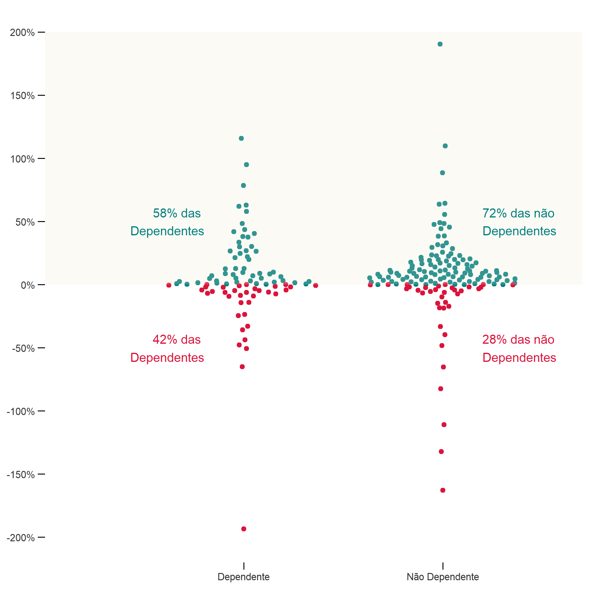
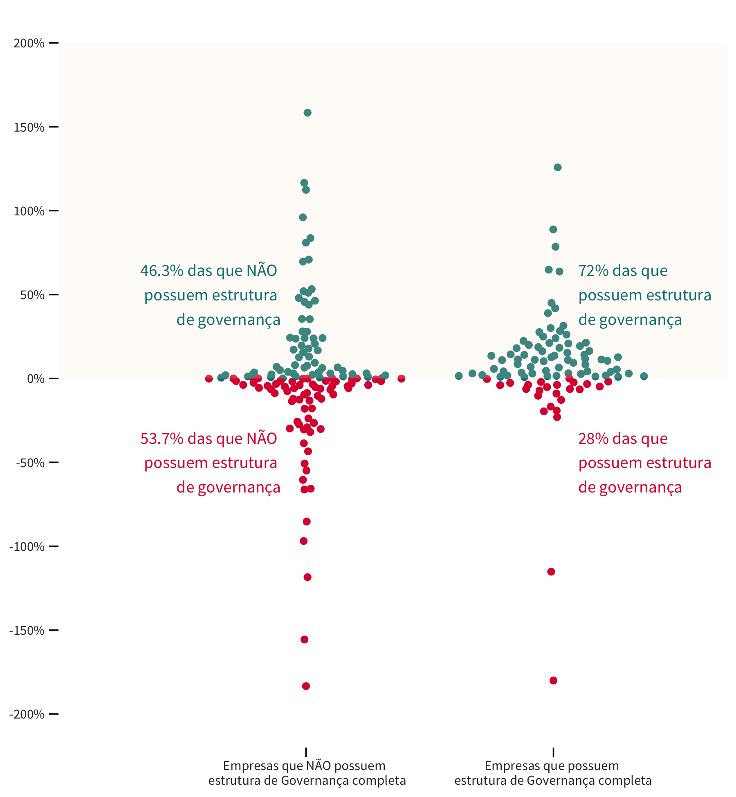
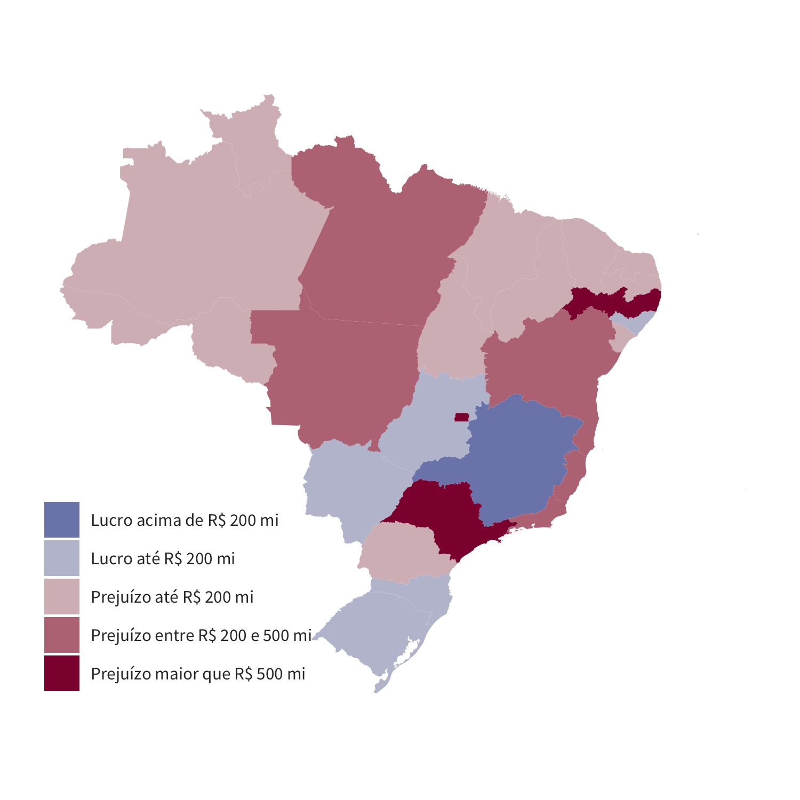

Fruto de intensivo esforço do Tesouro Nacional a fim de consolidar um grande volume de dados sobre o assunto, essa iniciativa reforça o compromisso da instituição com a transparência.
Entendemos que a transparência é o melhor instrumento para que a sociedade tenha condições de fiscalizar o papel dos governos estaduais enquanto donos de empresas tidas como estratégicas. Apenas com informações acessíveis, o cidadão será capaz de avaliar o quão vantajoso é ter um Estado empreendedor, podendo cobrar resultados ou questionar seus representantes.
Em 2019, iniciamos o processo de consolidação de informações detalhadas das empresas estatais estaduais, quando foram publicados diversos dados relativos ao exercício de 2018 (clique aqui para visualizar a publicação de 2019, com os dados de 2018).
Esse ano é a segunda vez em que realizamos essa consolidação e ela está cheia de novidades. Além de contarmos com uma nova seção, ao longo de todas seções anteriores foram incluídos quadros que trazem informações de legislações aplicadas ao tema em análise.
As informações encontram-se divididas em 4 partes:
- Com quantas estatais se faz um Estado;
- O Estado empreendedor;
- O Estado administrador;
- O Estado acionista.
O primeiro bloco apresenta o quantitativo geral das empresas controladas pelos Estados, demonstra o quantitativo por Região/Estado e informa o total de empresas dependentes e quais seus respectivos segmentos. A segunda seção discorre sobre o lucro/prejuízo dessas empresas além de apresentar um ranking de suas respectivas rentabilidades. A terceira seção relaciona a governança, caracterizada pela presença de conselhos/comitês, com os resultados das estatais. Por fim, apresenta-se o resultado do impacto financeiro líquido das empresas controladas nas finanças públicas estaduais.
Os dados aqui disponibilizados foram declarados pelos Estados, sendo, portanto, de inteira responsabilidade deles a precisão ou correção dos dados aqui consolidados.
Com quantas estatais se faz um estado?
No Brasil, pelos dados informados, existem 263 empresas controladas pelos Estados. A região nordeste apresenta a maior concentração de estatais, com 89 empresas (33,84% do total), seguida pela região sudeste, com 57 empresas (21,67%); centro-oeste, com 49 empresas (18,63%); e, por fim, as regiões norte e sul com 34 empresas (12,93%) cada uma.
O mapa abaixo mostra como ficaria cada região brasileira caso sua área fosse aumentada ou reduzida na proporção das empresas estatais que possui.

Apesar de a região nordeste concentrar o maior número de estatais, ela possui a segunda menor média de estatais por estado (10), devido à maior quantidade de estados, quando comparada às demais regiões do país. Os estados da região norte possuem a menor quantidade média de estatais (5), e os estados da região sudeste possuem a maior quantidade média de estatais por estado (14).
O gráfico abaixo mostra a quantidade de estatais por Estado, separadas entre dependentes e não dependentes. Em termos relativos, 43% das empresas declaradas pelos Estados são dependentes, ou seja, 114 empresas do total de 263. O número de estatais por Estado varia de 0 a 21, sendo que alguns deles possuem apenas empresas dependentes, e outros apenas não dependentes. O Amapá não figura no gráfico por ter informado não possuir estatal.
Dessa forma, o Distrito Federal lidera o ranking com um total de 21 empresas, seguido por São Paulo com um quantitativo de 20 e, em terceiro lugar, Minas Gerais com 18. Entre os Estados com a menor quantidade de empresas controladas, temos Mato Grosso do Sul e Tocantins com, respectivamente, 3 e 2 empresas. Em termos de dependência, Rio de Janeiro apresenta o maior número de empresas (9), seguido pelo Distrito Federal e pela Paraíba (8) e, empatados com um total de 7 empresas, os Estados de Pernambuco, Sergipe, Acre e Mato Grosso. Ao focalizar em empresas não dependentes, Minas Gerais lidera com um conjunto de 15 empresas, acompanhada pelo Distrito Federal e por São Paulo (13), Goiás (12), Rio Grande Sul (11) e Paraná com um quantitativo de 9 empresas.
Quantidade de empresas por Estado
- Dependentes
- Não Dependentes
- Não Informado

Ao examinar as empresas controladas pelos segmentos empresarias, observa-se que os setores de Financeiro, Saneamento e Desenvolvimento são os mais representativos, com 31, 29, 23 empresas, respectivamente. Entre os segmentos com menor número de empresas, destacam-se os setores de Saúde e Mineração (4).
Abaixo é possível selecionar um setor para exibir sua definição, bem como um mapa indicando os estados que possuem empresas nessa área de atuação.

Em relação ao critério dependência, o setor Pesquisa e Assistência Técnica possui o maior número de empresas dependentes (17), seguido pelo setor de Desenvolvimento e o de Habitação e Urbanização (14) e pelos de Abastecimento e Transportes com 10 empresas. Por outro lado, o setor Financeiro caracteriza-se pelo maior quantitativo de empresas não dependentes (27), seguido de perto pelo de Saneamento (24), Distribuição de Gás (15), Gestão de ativos (13) e Energia (11).
Quantidade de empresas por setor
- Dependentes
- Não Dependentes
- Não Informado

Uma combinação dessas informações (Estados / quantitativo empresas / setores empresarias) pode ser visualizada abaixo.
Quantidade de empresas por Estado e por setor

O estado empreendedor
A atuação do Estado por meio de empresas estatais tem previsão na Constituição Federal, entretanto, ela prevê essa atuação do Poder Público como uma exceção. Além disso, a fim de garantir o alcance do “relevante interesse coletivo”, a eficiência, a eficácia e a efetividade devem estar presentes na atuação das estatais.
Nesse sentido, é importante quantificar os lucros/prejuízos das empresas controladas pelos Estados, além de avaliar o patamar de rentabilidade delas. O gráfico abaixo demonstra a distribuição dos lucros ou prejuízos, categorizado por dependentes e não dependentes. Ao longo de 2019, os números revelam que 35% das estatais obtiveram prejuízo. Ao se analisar especificamente as empresas não dependentes, tem-se que 26% delas tiveram perdas financeiras. Esse valor passa para 48% quando se leva em consideração apenas as estatais dependentes. Nesse sentido, observa-se que, em termos relativos, o percentual de empresas com prejuízos financeiros em 2019 caracterizadas como dependentes é quase o dobro das não dependentes.
Distribuição das empresas em relação ao lucro ou prejuízo
- Empresas com Prejuízo
- Empresas com Lucro
- Sem informação

Em termos de segmento empresarial, o setor que apresenta o maior lucro para o período foi o de Energia com um ganho total de mais de 6 bilhões de reais (R$ 6.129 milhões). Logo em seguida, tem-se o segmento de Saneamento com um resultado em torno de 4 bilhões de reais (R$ 3.922 milhões), e, na sequência, o setor de Desenvolvimento, com lucro de R$ 2 bilhões (R$ 2.031 milhões). Pelo outro lado, o setor de Gestão de Ativos possui o pior resultado para o período com prejuízos de aproximadamente 774 milhões de reais. Em seguida, o segmento de Transportes com cerca de 337 milhões de reais em perdas e o setor de Pesquisa e Assistência Técnica 31 milhões de reais em prejuízo.
Lucros e Prejuízos totais por setor de atuação
- Prejuízo
- Lucro

Uma relação importante de se avaliar é o resultado da empresa (lucro/prejuízo) em relação ao tamanho do seu patrimônio. No diagrama abaixo, plota-se no eixo y (ordenada) o patrimônio líquido das empresas e no eixo x (abscissa) os lucros/prejuízos correspondentes. De forma simplificada, observa-se uma relação positiva entre a magnitude (positivo/negativo) do resultado apresentado e o correspondente patrimônio líquido. Este resultado já era de certa forma esperado pelo fato de os valores nominais para lucro/prejuízo divulgados estarem associados com o tamanho da empresa – representado aqui pelo seu patrimônio líquido.
Relação entre Lucro / Prejuízo e o Patrimônio Líquido das empresas
Passe o mouse sobre os pontos para obter detalhes sobre a empresa. É possível selecionar uma área para zoom (clicando-se duas vezes sobre o gráfico retorna-se à visão principal).
Dessa forma, uma maneira complementar de se comparar os retornos dos diferentes setores analisados é por meio de um indicador de rentabilidade que pondere a magnitude do resultado da companhia pelo seu tamanho. Nessa linha de raciocínio, elaboramos um indicador calculado pela razão entre o lucro/prejuízo e o patrimônio líquido que representa uma estimativa da rentabilidade das empresas controladas pelos Estados. O gráfico abaixo apresenta os principais resultados.
Estimativa de rentabilidade das empresas
Rentabilidade definida como a razão entre lucro ou prejuízo e patrimônio líquido. As empresas são representadas por pontos, da seguinte forma:
● rentabilidade positiva ● rentabilidade negativa
Estão excluídas 63 empresas sem informação de lucro / prejuízo ou patrimônio líquido, ou que apresentaram patrimônio líquido menor ou igual a zero. Para uma melhor visualização, não estão apresentadas 8 empresas para as quais o valor do indicador de rentabilidade ficou abaixo de -200%, e 4 empresas para quais o indicador de rentabilidade foi superior a +200%.

Novamente, observa-se a conclusão de que a quantidade relativa de estatais dependentes com rentabilidade negativa (49,3%) é quase o dobro das estatais não dependentes (26%). Ao se explorar os números das rentabilidades pelo critério de dependência e por segmentos empresariais, verifica-se que as empresas do setor Portos e Hidrovias que são dependentes possuem a maior média de rentabilidade para o ano de 2019, com uma cifra de 77%. Também se destacam as empresas não dependentes de Desenvolvimento, Distribuição de Gás, Saúde e Energia, com rentabilidades médias de 55%, 25%, 24% e 21% respectivamente. Com rentabilidades médias negativas, ressaltam-se as empresas dependentes de outros segmentos (-160%), de saúde (-26%) e de turismo (-10%) e as não dependentes dos segmentos de Pesquisa e Assistência Técnica (-37%) e Transportes (-14%).
Estimativa de rentabilidade média das empresas por setor
Rentabilidade definida como a razão entre lucro ou prejuízo e patrimônio líquido. Estão excluídas 76 empresas sem informação de lucro / prejuízo ou patrimônio líquido, ou que apresentaram patrimônio líquido menor ou igual a zero. Para evitar inviabilizar e distorcer a visualização, também está excluída a Companhia de Gás do Piauí, em razão de a rentabilidade calculada a partir dos dados declarados ter atingindo um valor de -6.650%. O tamanho dos pontos sugere a quantidade de empresas que foram consideradas no cálculo da média indicada.
- Média Dependentes
- Média Não Dependentes
Observar que a posição do ponto que ilustra a rentabilidade média das empresas dependentes no setor "OUTROS" não corresponde ao seu valor de -160%, para evitar achatar e dificultar a visualização de todos os demais pontos. Para indicar essa quebra na escala, a linha correspondente é tracejada, e não contínua.
A maioria das empresas que pagou PLR (Participação nos Lucros e Resultados) ou RVA (Remuneração Variável Anual) é não dependente. Considerando-se apenas esse grupo, os principais setores que efetuaram pagamento de algum tipo de participação nos lucros foram Energia (64%), Distribuição de Gás (62%), Financeiro (58%) e Saneamento (55%).
Pagamento de Participação nos Lucros
Cada quadrado representa uma empresa, os números indicam o percentual de empresas do setor que pagaram PLR, para as dependentes e para as não dependentes. Estão excluídas nove empresas para as quais não foram fornecidas as informações necessárias.
- Empresa que pagou PLR
- Empresa que não pagou PLR

O pagamento de PLR ou RVA para estatais federais é regulamentado pela CCE n° 10, de 30 de maio de 1995, e não permite o pagamento de distribuição de lucros caso a empresa tenha recebido recursos do Tesouro Nacional, seja para o pagamento de despesas correntes ou de capital, o que já impede a distribuição de lucros por estatais dependentes. O regulamento também não permite distribuição de lucros por estatais que tenham registrado prejuízos em exercícios anteriores ainda não amortizados por exercícios posteriores. No entanto, essas regras não são válidas para as estatais estaduais, que seguem regras específicas conforme o Estado.
Assim, quatro empresas, sendo duas dependentes, informaram terem realizado pagamentos de PLR ou RVA em 2019 mesmo apresentando prejuízos nos exercícios de 2018 e 2019. Outras duas empresas dependentes, que apresentaram lucro em 2019, também pagaram PLR ou RVA. Veja abaixo que estatais foram essas:
Pagamento de Participação nos Lucros
| Estatal | Estado | Dependência | Apresentou prejuízo em 2018 e 2019 |
|---|---|---|---|
| CIA DE ENGENHARIA HÍDRICA E DE SANEAMENTO DA BAHIA - CERB | BA | Dependente | Não |
| INSTITUTO BRB DE DESENVOLVIMENTO HUMANO E RESPONSABILIDADE SOCIAL | DF | Dependente | Não |
| CETESB - COMPANHIA AMBIENTAL DO ESTADO DE SÃO PAULO | SP | Dependente | Sim |
| COMPANHIA PAULISTA DE TRENS METROPOLITANOS – CPTM | SP | Dependente | Sim |
| COMPANHIA DO METROPOLITANO DE SÃO PAULO-METRÔ | SP | Não Dependente | Sim |
| EMPRESA METROPOLITANA DE TRANSPORTES URBANOS DE SÃO PAULO S/A - EMTU-SP | SP | Não Dependente | Sim |
O estado administrador
Estruturas de governança tem como objetivo principal coordenar a empresa para atingir seus objetivos, assim podem surgir diferentes comitês ou conselhos que atuam focados em áreas específicas (por exemplo, fiscal, administração e auditoria) visando auxiliar a empresa em seus resultados.
Apesar de a presença de qualquer comitê ou conselho dentre os citados acima já indicar que a empresa possui algum tipo de governança, a análise a seguir irá considerar que há uma estrutura de governança apenas no caso de estatais que possuem concomitante três estruturas: Conselho Fiscal, Conselho de Administração e Comitê de Auditoria. Essa decisão foi tomada devido ao fato de que diferentes legislações obrigam as estatais a possuírem tais estruturas de acordo com suas características, assim, praticamente todas as estatais possuem ao menos uma das estruturas.
Legislações específicas estabelecem a necessidade de tais conselhos/comitês nas estatais, de acordo com suas características. A Lei 6.404/1976, que dispõe sobre as Sociedades por Ações, prevê a obrigatoriedade de Conselho Fiscal para toda S.A e de Conselho de Administração para toda S.A de capital aberto. A Lei 13.303/2016 prevê a constituição de Conselhos Fiscais, Comitê de Auditoria e Conselho de Administração.
Considerando-se as estatais não dependentes, os setores com melhor governança, ou seja, que possuem as três estruturas (administração, fiscal e auditoria) foram Pesquisa e Assistência Técnica (100%), Outros (100%), Energia (91%), Saneamento (88%) e Financeiro (78%); já os com as piores estruturas de governança foram Desenvolvimento (33%), Comunicação (33%), Transporte (30%) e Abastecimento (12%), nos quais menos de 40% das estatais apresentam as três estruturas.
Já no caso das estatais dependentes, o melhor resultado aparece para o setor de Portos e Hidrovias (67%). Entretanto, a maioria das estatais dependentes não possuem as três estruturas de governança, sendo que em boa parte dos setores não há nenhuma empresa que atende a esse critério.
Presença de estrutura de governança por setor
Percentuais das empresas que possuem estruturas de governança completas (Conselho de Administração, Conselho Fiscal e Comitê de Auditoria) por setor e por tipo de dependência.
- Dependentes
- Não Dependentes

Os estados com melhores estruturas de governança foram Tocantins, Roraima, e Piauí, todas as estatais não dependentes destes estados possuem as três estruturas de governança, e no caso do Piauí 40% das estatais dependentes também possuem as três estruturas. Rondônia, Maranhão e Acre não possuem as três estruturas juntas para nenhuma de suas estatais.
Presença de estrutura de governança por estado
Percentuais das empresas que possuem estruturas de governança completas (Conselho de Administração, Conselho Fiscal e Comitê de Auditoria) por estado e por tipo de dependência.
- Dependentes
- Não Dependentes

O gráfico abaixo mostra que as empresas mais lucrativas possuem as três estruturas de governança. 81% das empresas que possuem estrutura de governança apresentaram rentabilidade positiva, enquanto entre as que não possuem esse valor foi de 52%.
Estimativa de rentabilidade das empresas pelo critério de Governança
Rentabilidade definida como a razão entre lucro ou prejuízo e patrimônio líquido. As empresas são representadas por pontos, da seguinte forma:
● rentabilidade positiva ● rentabilidade negativa
Estão excluídas 63 empresas sem informação de lucro / prejuízo ou patrimônio líquido, ou que apresentaram patrimônio líquido menor ou igual a zero. Para uma melhor visualização, não estão apresentadas 8 empresas para as quais o valor do indicador de rentabilidade ficou abaixo de -200%, e 4 empresas para quais o indicador de rentabilidade foi superior a +200%.

O estado acionista
Quais os resultados das empresas para o Estado Acionista?
Há uma relação financeira entres os Estados e suas estatais que se dá, sobretudo, por meio de:
▲ Dividendos — recursos, decorrentes de uma parte do lucro apurado, que as estatais transferem para o Estado.
▼ Subvenções e Aumento de Capital — recursos que os Estados transferem para as empresas.
Quando os Estados recebem mais recursos por meio de dividendos do que transferem por meio de subvenções ou aumento de capital, pode-se dizer que as estatais contribuem para o resultado fiscal do Estado. No entanto, quando as saídas de recursos dos Estados são maiores que as entradas, podemos dizer que tais empresas oneram o resultado fiscal do Estado.
De forma geral, ao longo de 2019, os Estados transferiram R$ 2 bilhões como reforço de capital, R$ 4,4 bilhões como subvenções e receberam R$ 1,6 bilhão de dividendos das empresas, ou seja, houve repasses líquidos para as estatais da ordem de R$ 4,8 bilhões.
No entanto, é importante ressaltar que 71 das 263 empresas (27%) não informaram valores para quaisquer dessas operações — sejam dividendos, subvenções ou aumentos de capital.
O mapa abaixo mostra, em termos agregados, o resultado líquido (entradas menos saídas) dos Estados nas suas relações com as estatais estaduais. Em 2019, os únicos Estados que receberam mais recursos das estatais do que transferiram foram Minas Gerais, Mato Grosso do Sul e Rio Grande do Sul.
Resultado Líquido das Empresas para o Estado Acionista
Apesar de a LRF considerar como dependente estatais que receberam recursos do ente, à exceção de aportes de capital para aumento de participação acionária, R$ 47 milhões foram repassados para as estatais não dependentes a título de subvenções.
Dentre as estatais dependentes, nenhuma repassou dividendos aos estados. Os estados repassaram R$4.348 milhões às estatais a título de subvenções e R$ 321 milhões a título de reforço de capital.